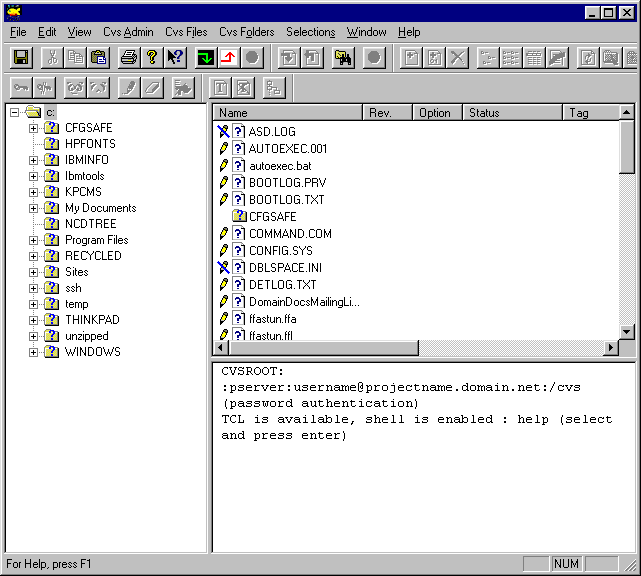
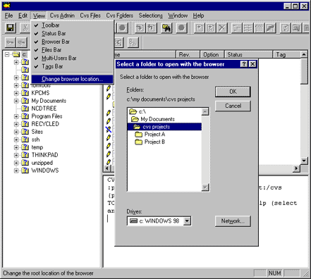
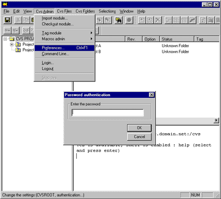
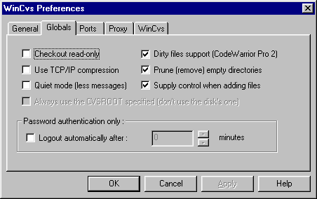
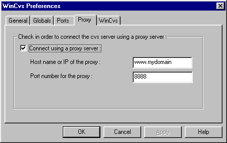

Using WinCvs to work with project source files
If you are using MS Windows, you can use the graphical client called WinCvs to access a project's version controlled source code files. WinCvs looks and behaves similar to Windows Explorer. You can download WinCvs on line and install it on your machine.
Help for WinCvs: Index
When you launch WinCvs, you see a screen that looks like this:

Before going further, make a new directory on your hard disk where you will store your working copy of the project's source files. A good name for this directory is the one-word name of the project files you need. If you are working on more than one project, you may wish to make a general "projects cvs " folder, and then create subfolders for each project by name.
Select the "project" directory in the WinCvs program's left-hand pane. (If you do not see your newly created projects directory right away, don't worry! You may need to collapse and expand the tree to force it to refresh.) If your project directory is on a different drive not displayed in the left-hand WinCvs pane, you will need to use the Change browse location... command under the View menu. Be sure to double click on the drive or directory you want before clicking OK.

More about setting a work areaFirst you must define the location of the WinCvs main repository, the CVSROOT. If you are only working on one project at a time, you only need to set up the cvsroot setup once, i.e. the first time you use WinCvs to access the project's source repository through this site.



Now you are ready to begin Checking source files in and out of WinCvs